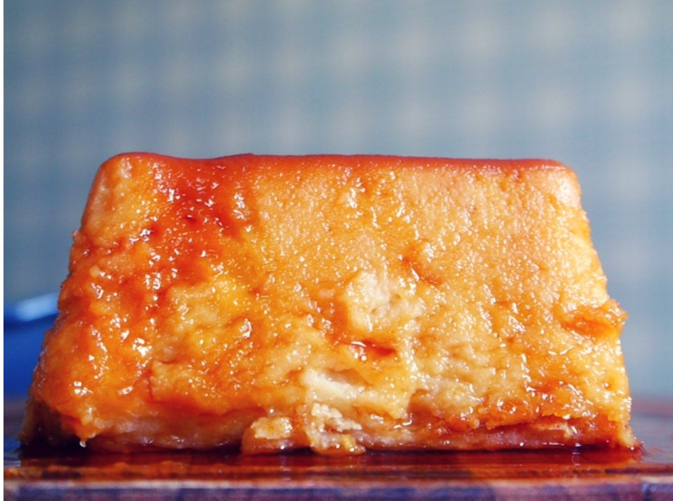

- Inicio
- Recetas
- Recetas Dulces
Tortas y Budines -Receta de Budín de pan en 4 pasos sencillos!
Receta Budín de Pan en 4 pasos sencillos!
Pinterest{kind=link}
Estoy muy contenta porque hoy hacemos y les cuento cómo hacer budín de pan!
Siempre ha sido uno de mis platos dulces favoritos, y seguramente el de muchos de ustedes también ya que el budín de pan es un clásico entre las recetas de muchas abuelas. Este plato dulce también conocido como pudín de pan tiene la característica de ser muy versátil ya que puede variar sus ingredientes, su preparación y también su presentación.
como hacer budín de pan casero
El budín de pan es reconocido en varias cocinas de todo el mundo. Suele prepararse con sobras de pan, por lo que resulta una receta excelente para reciclar el pan que compramos hace un par de días y nos sobró. También pueden incorporarse migas de otras sobras como facturas o budín.
Por otro lado las recetas de budín de pan al rededor del mundo suelen variar tanto es sus ingredientes como en la forma de servirlo. Algunas recetas llevan especias como nuez moscada, clavo de olor o esencia de vainilla, también las hay con canela: a mi me gusta como queda con ralladura de limón como les enseño hoy. Además en países como Malasia (si chicos, en Malasia también comen budín de pan), este plato se consume con crema pastelera, mientras que aquí en sudamérica solemos acompañarlo con una buena cucharada de dulce de leche.
Si hablamos de cómo hacer un budín de pan, éste puede ser preparado con diferente consistencias. Hay recetas en las cuales solo se aplasta el pan con las manos y queda un postre mucho mas rústico, en ésta receta lo prepararemos con una consistencia lisa y suave muy parecida a la de un flan.
Otro dato importante es que, por lo general, incluyen un caramelo líquido como sucede con el flan. Aquí les enseño a hacer un caramelo fácil, y además pueden ver los detalles de la receta de caramelo aquí.
Como se hace el budín de Pan
Lo que más me gusta de ésta receta de budín de pan es, sin lugar a dudas, que se hace casi completamente en la licuadora. Básicamente solo vamos a ensuciar 3 recipientes: la licuadora, una sartén y el molde en el que lo vamos a preparar. Y una cosa lleva a la otra, prepararlo en licuadora hace que tardemos muy poco tiempo, y lo convierte en un postre fácil, rápido, y delicioso.
Si quieren más sobre aprovechología, vean mi ebook de #Mealprep acá!
CLICK AQUI para seguirme en mi canal de YouTube ¡subo contenido exclusivo para esta red!
Ingredientes
para el budin de pan
- 300g. de pan
- 1 lt de leche.
- 250g. de azúcar
- Ralladura de limón
- 3 huevos
para el caramelo
- 1 taza de azúcar
- 1/2 taza de agua
Receta de budín de pan fácil
como se hace paso a paso
- Cortar el pan en trozos pequeños. El pan puede ser viejo, es decir no es necesario que esté crocante, de hecho el budín de pan es una receta justa para reciclar el pan que ya está con consistencia gomosa.
- Colocar los trozos de pan en la licuadora junto con la leche que tiene que estar tibia (no caliente).Dejar hidratando en la leche tibia durante media hora.
- Mientras tanto vamos a hacer el caramelo: colocar en una olla antiadherente un vaso de azúcar. En otro recipiente ponemos a hervir medio vaso de agua. Cuando el azúcar esté completamente derretida retiramos del fuego y agregamos el agua hirviendo, revolvemos hasta que esté totalmente integrado. Luego dejamos enfriar hasta que esté listo el caramelo. Les recomiendo que vean la receta completa en el link que les dejé mas arriba, que con caramelo caliente no se juega!
- Ahora llevamos el caramelo al molde en el que vamos a hacer el budín de pan. Es importante asegurarnos de que el caramelo cubra todo el fondo y los bordes como pueden ver en el video.
- Una vez pasada la media hora vamos alicuar el pan y la leche. Yo lo hago completamente licuado hasta obtener una crema, si ustedes quieren que se noten los pedacitos de pan pueden licuarla menos.
- Luego de obtener la consistencia deseada agregamos el azúcar y los huevos y volvemos a licuar hasta integrar completamente.
Así quedó mi budín de pan
húmedo y riquísimo!
Publicado por Paulina Cocina, el 12 de julio de 2017. Mas recetas con éstos ingredientes:Budines